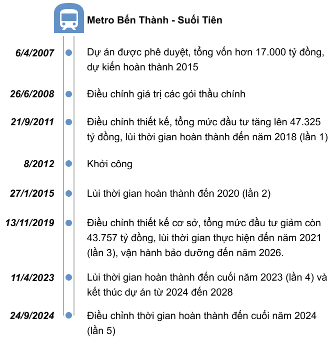

Xin chào nhó nhó
Hôm ni code không kịp huhu
omaigodnessss
Tuyến metro Bến Thành - Suối Tiên dài gần 20 km, gồm 14 nhà ga, trong đó có 3 nhà ga dưới lòng đất, là dự án tàu điện ngầm đầu tiên tại Việt Nam, dù loại hình này đã xuất hiện hơn 100 năm trước tại Anh và phổ biến ở nhiều nước phát triển. Bước đi tiên phong của TP HCM được kỳ vọng sẽ mở đường hiện đại hóa giao thông công cộng, giúp giải tỏa áp lực tại các đô thị đông dân như TP HCM, Hà Nội.
Trường Đại học Kinh tế-Luật
Đang có màu ni nì
Màu ni hông điệp